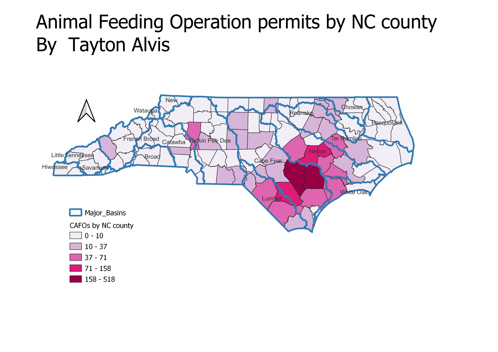

CAFO permits per NC county
Tayton Alvis
CAFOs (Concentrated Animal Feeding Operations) are resource intensive farms associated with the accumulation of waste and nutrient runoff that can cause toxic algal blooms, low dissolved oxygen levels, and accumulation of high levels of fecal coliform within nearby waterways. By overlaying major NC watersheds onto a chloropleth map of CAFO density, watersheds of particular pollution concern can be identified.

Data used for this project
CSV dataset
Link to shapefile